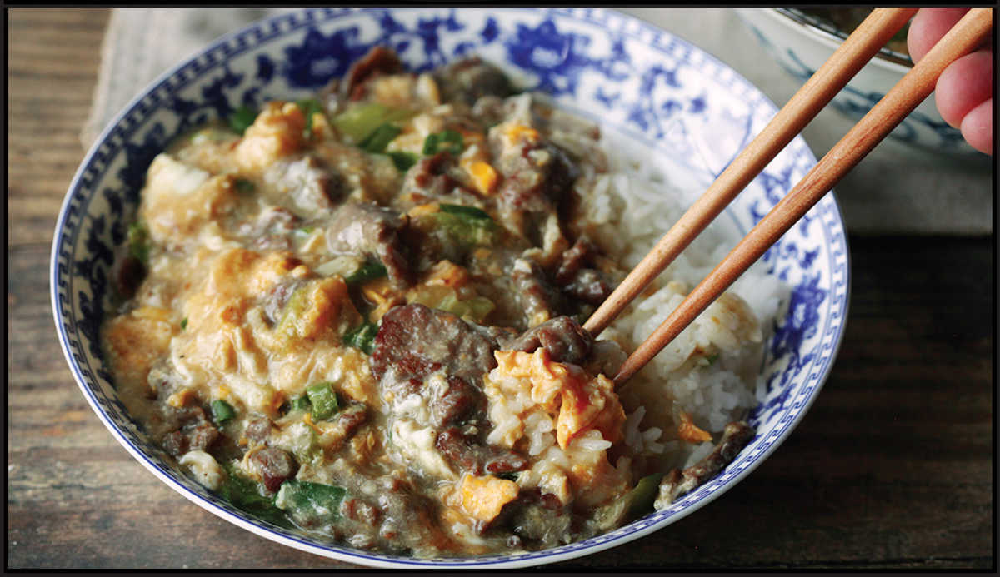
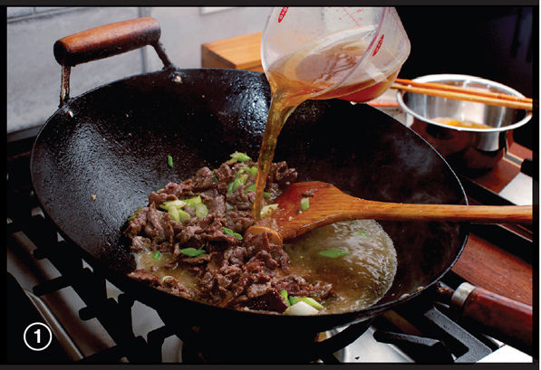
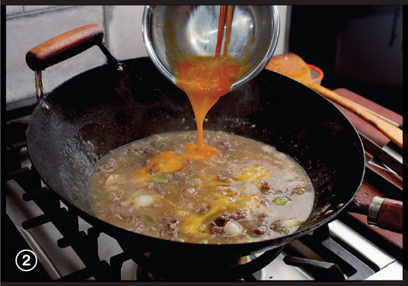

SLIPPERY EGG WITH BEEF

|
Yield Serves 4 |
Active Time 15 minutes Total Time 30 minutes |
I like using thinly shaved beef for this dish. Thinly sliced beef chuck roll, rib eye, or short rib intended for shabu, sukiyaki, or Korean BBQ can be found at many Asian supermarkets. You can also use skirt or flank steak thinly sliced against the grain by hand (see here for tips on cutting beef for stir-fries). For an even faster, easier, and more inexpensive dish, you can use ground meat in place of the sliced meat. If using ground meat, omit the baking soda and the rinsing process in step 1. This dish works well with plant-based ground meats like Impossible or Beyond.
This beef and egg stir-fry is not a dish I was familiar with growing up, but as soon as I saw a version of it on the wonderful Chinese-cooking website The Woks of Life, I knew it would become a staple for me. In its ingredients and preparation, it resembles Japanese rice dishes like Gyudon (here) or Oyakodon (here), with the key difference being that Slippery Egg with Beef starts with stir-frying the beef rather than simmering it, and the broth gets thickened into a viscous sauce, the gently scrambled egg suspended in it.
My own recipe is a hybridized version of the Cantonese original with the Japanese flavors of sake and mirin. The technique is very versatile: It works with sliced beef, shaved beef, or any type of ground meat (even plant-based ground meat substitutes). It’s also easy to add vegetables to. Even frozen peas come out bright and flavorful when coated in the slippery egg mixture. I love the way you can scoop up a clump of rice with chopsticks and the eggs and beef will just barely cling together as they make the trip to your mouth.
The only real trick to getting this dish right is to pay careful attention to the thickness of the sauce you make in the wok as you drizzle in the egg. It should be quite viscous, to the point that it coats the back of a spoon and bubbles of steam slowly burst rather than vigorously boil, but not so thick that it’s gloppy or pasty. The good news is it’s easy to adjust that texture: let it simmer and reduce if it’s too thin and add a little extra water if it becomes too thick.
INGREDIENTS
For the Beef:
12 ounces (340 g) thinly sliced beef (see Note)
¼ teaspoon (1 g) baking soda (optional; see Note)
1 teaspoon (5 ml) light soy sauce or shoyu
½ teaspoon (2 g) kosher salt
½ teaspoon (1.5 g) cornstarch
For the Sauce:
2 tablespoon (30 ml) sake
1 tablespoon (15 ml) mirin
1 tablespoon (15 ml) light soy sauce or shoyu
Pinch of freshly ground white pepper
Pinch of kosher salt
2 cups (500 ml) homemade or store-bought low-sodium chicken stock, dashi, or water
For the Cornstarch Slurry:
2 tablespoons (18 g) cornstarch
¼ cup (120 ml) water
For the Stir-Fry:
1 tablespoon (15 ml) peanut, rice bran, or other neutral oil
2 coin-sized slices fresh ginger (optional)
2 scallions, cut on a bias into ½-inch segments
2 medium garlic cloves, minced or crushed in a mortar and pestle (about 2 teaspoons/10 g)
Kosher salt and freshly ground white pepper
½ cup (100 g) frozen peas, thawed (optional)
4 large eggs, lightly beaten with a pinch of kosher salt
4 bowls steamed rice
DIRECTIONS
1For the Beef: Place the beef in a medium bowl, cover with cold water, and vigorously agitate it. Drain through a fine-mesh strainer and press on the beef with your hands to remove excess water. Return the beef to the bowl, add the baking soda, and vigorously massage the baking soda into the meat, lifting the meat, throwing it down, and squeezing it for 30 to 60 seconds. Add the soy sauce, salt, and cornstarch. Roughly work the marinade into the meat for at least 30 seconds. Set aside to marinate for at least 15 minutes and up to overnight.
2For the Sauce: Combine the sake, mirin, soy sauce, white pepper, salt, and stock or water in a medium bowl and stir together until homogenous. Set aside. Combine the cornstarch and water in a separate small bowl and stir with a fork until the cornstarch is dissolved.
3For the Stir-Fry: Rub a thin film of oil into a wok and set it over high heat until smoking. Add the tablespoon of oil and swirl to coat. Add the ginger and let it sizzle for 15 seconds. Add the beef and stir-fry until mostly cooked through and lightly browned in spots, about 1 minute. Add the scallions and garlic and stir-fry until fragrant, about 30 seconds.
4Add the sauce mixture and peas (if using) and bring to a boil. Stir the cornstarch slurry and add it to the wok. Simmer until the sauce is thick enough to coat the back of a spoon, 2 to 3 minutes. Adjust the seasoning with salt and white pepper to taste. If there’s a lot of foamy scum floating on top of the broth, you can skim it off with a ladle and discard if desired.
5Reduce the heat to a bare simmer. Drizzle the egg mixture into the sauce, then very slowly stir it with a ladle or wok spatula until the eggs form tender ribbons, about 30 seconds. Divide the mixture evenly over individual bowls of steamed rice and serve.

